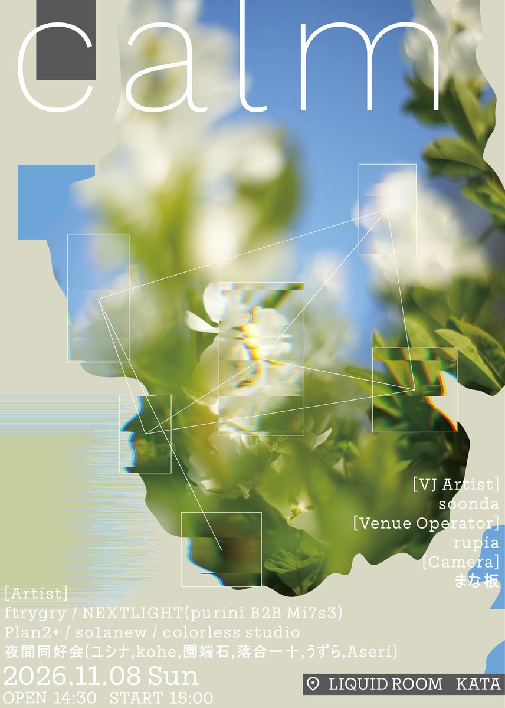
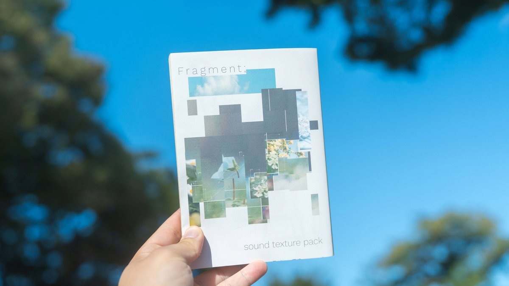
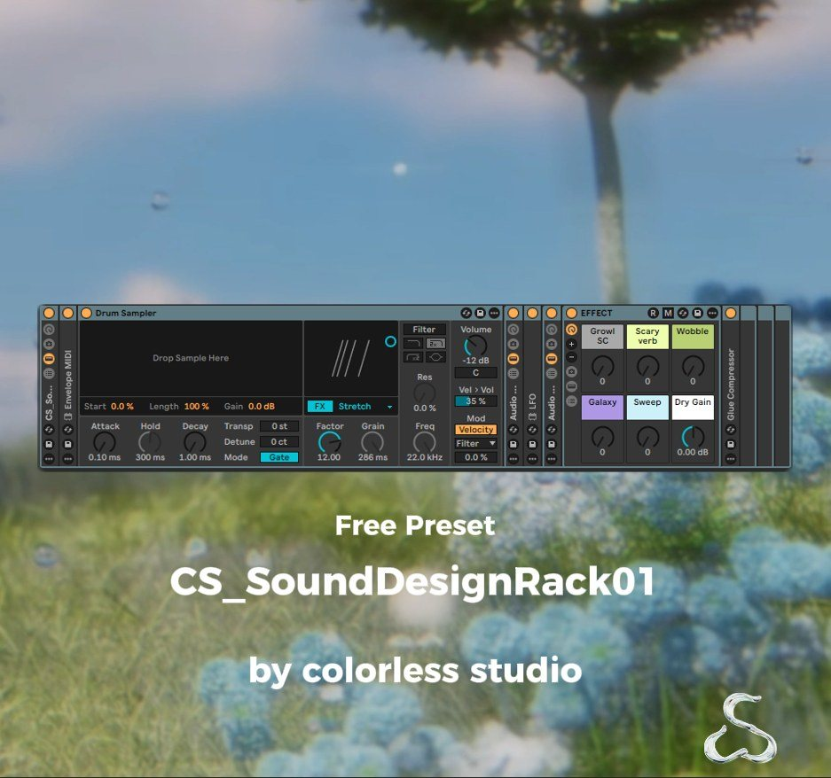
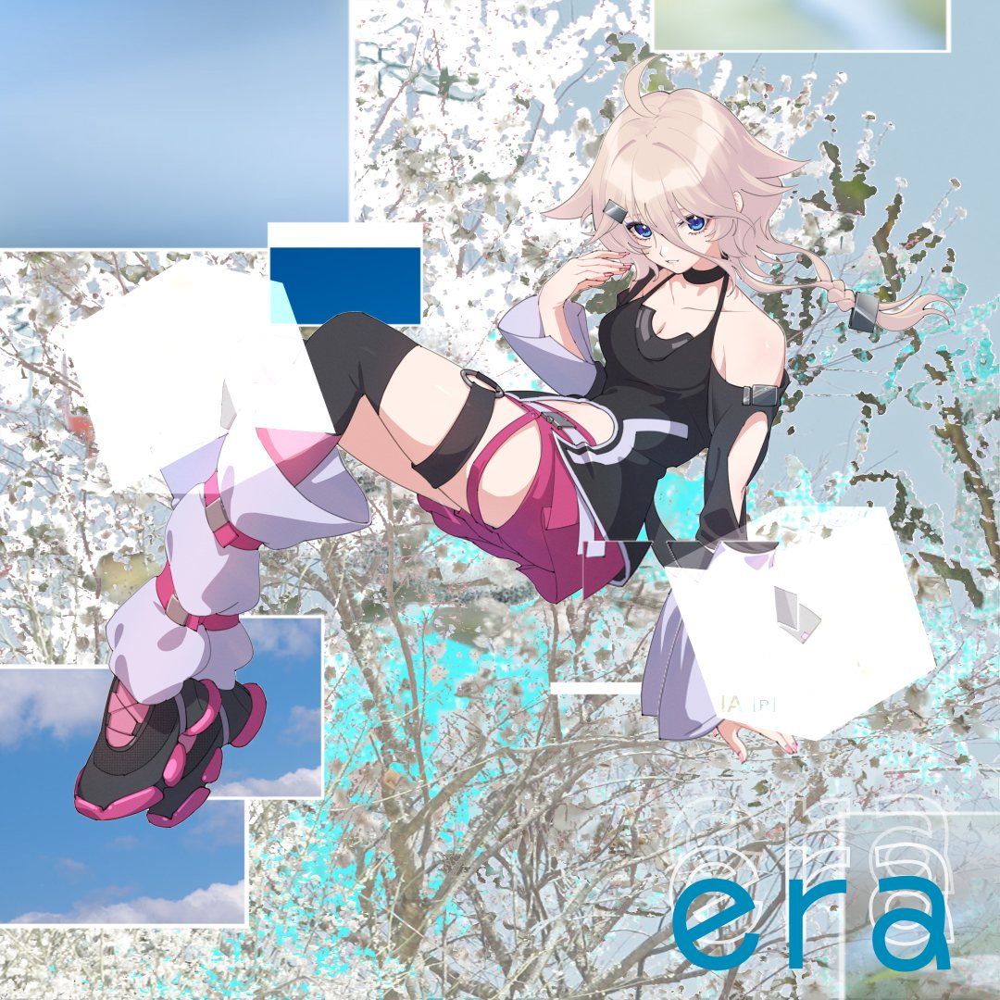
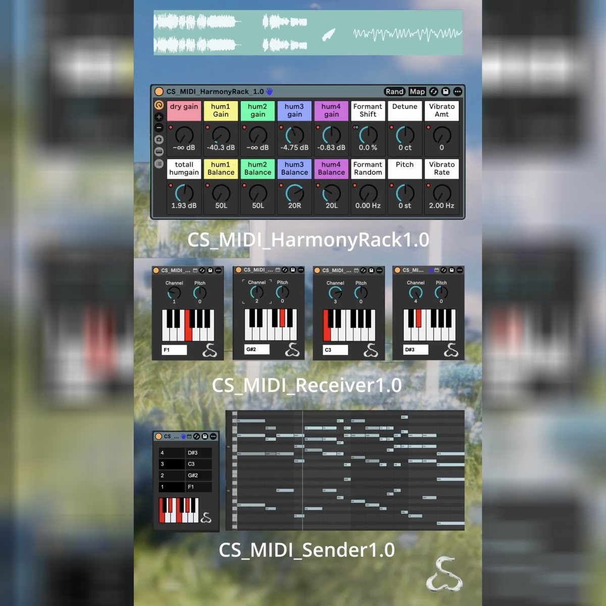
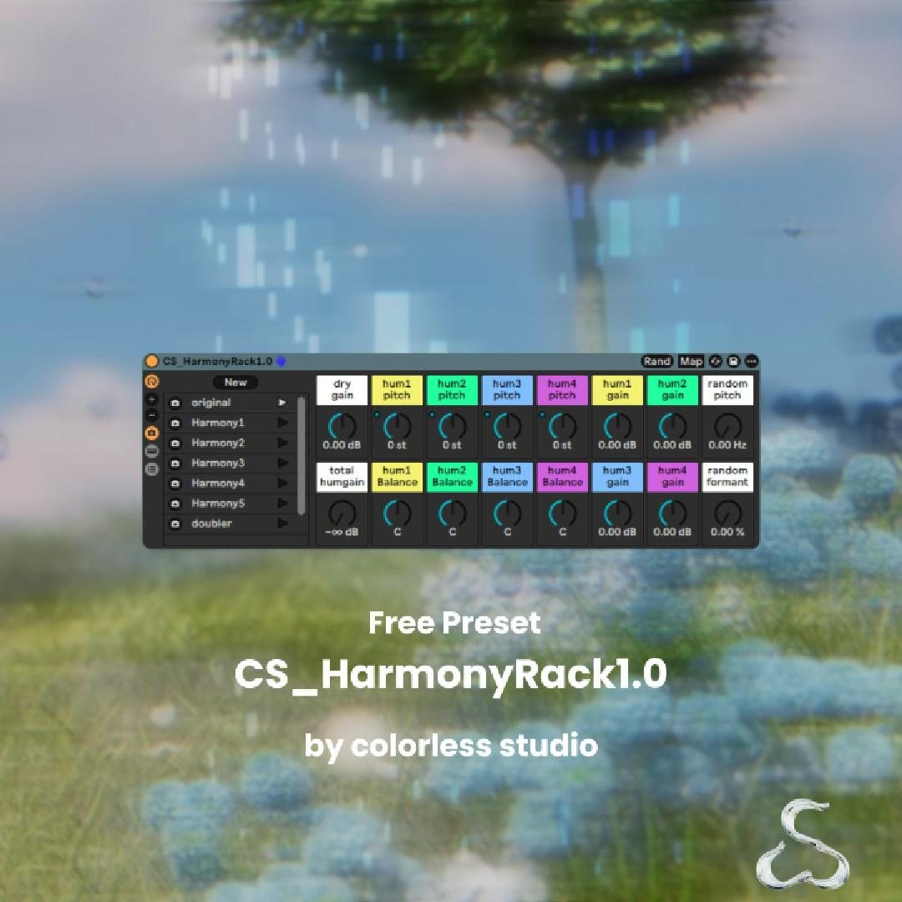

- 01daydreamMalcha
- 02reversekou
- 03sele夜間同好会
- 04LayersYusho Sunagawa
- 05RESFEBERso1anew
- 06downspoutpotaguri
- 07tōrō nagashiftrygry
- 08refractionTsuyoshi A.
- 09Fragmentcolorless studio
Fragment;
album 2026.10.25 — CSCD-0002 / M3-2026秋
Fragment; sound texture pack
sample pack 555 files
CS_SoundDesignRack1.0
tool
era / IA :[R]
single
CS_MIDI_HarmonyRack1.0
tool-
sync feat.ひらめ _ natsume & Viznode
-
ulysses feat.ひらめ _ ていぬ
-
Remnant feat.ひらめ _ natsume & AZURA
-
なびく足跡 _ Yusho Snagawa
-
adrift _ ecro
-
eidolume _ jian
-
First Breath of Down _ あるふぁ
Sound as Film
album-ish (From Roteano)
single
CS_HarmonyRack1.0
tool-
as usual_ていぬ
-
archetype_wavfire
-
just a dream_ecro
-
shine_dowfi
-
mimi_nari_nuimi
-
Inconsistent_shimoui
-
光の記憶_wagataki
-
waterfowl_flawguri
-
solivagant_jian
-
Evoke_Viznode
-
Awake_natsume & alpha
-
CS_AW_teinu_Spectral Riser_Ebmaj
-
CS_AW_Wavfire_pluckdelay_C#Maj
-
CW_AW_ecro_hocket_texture_01_F#maj
-
CS_AW_dowfi_piano_random_C#
-
CS_AW_nu_imi_dmn
-
CS_AW_Shimoui_granular_epiano_120_Dmaj
-
CS_AW_wagataki_piano_rondom_shimmering_Dmaj
-
CS_AW_flawguri_classical_guitar_120_Fmaj
-
CS_AW_jian_spectral
-
CS_AW_Viznode_Swell_Textural_1_D
-
CS_AW_alpha_spacy_lofi_granular_G#maj
-
CS_AW_natsume_vocode_flower_pulse_Fmaj